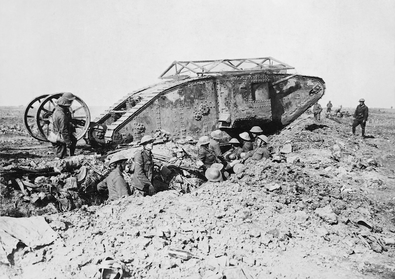
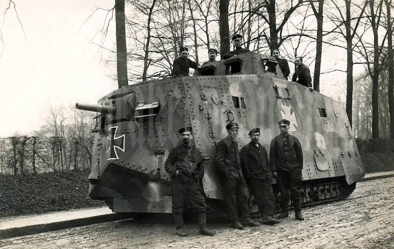
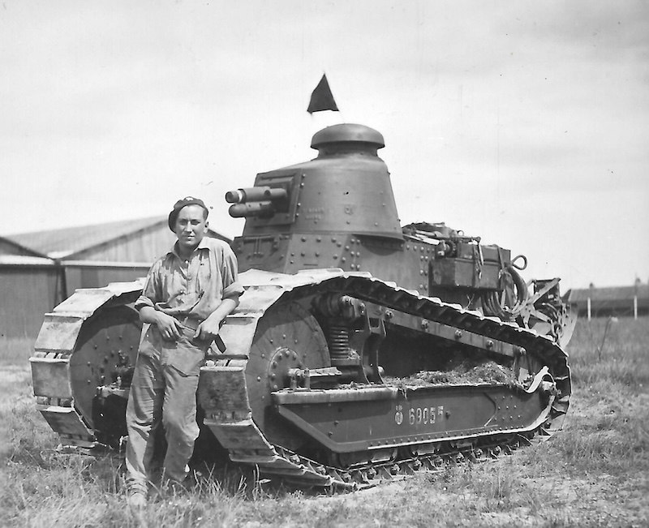

W 1914 roku zaczęła się 1ww, wszystkie strony potrzebowały nowej jednostki militarnej
I tak w 1916 powstał pierwszy w historii czołg MARK 1,świetnie się zprawdzał się w niszczeniu wrogich umocnień, ale poza tym był nie dopracowaną,wadliwą maszyną.

Brytyjczycy dalej rozwijali swoją broń pancerną,i tak powstał kultowy czołg MARK 5 w porównaniu ze swoimi poprzednikami był maszyną która się sprawdzała świetnie, ale i tak cała potęga tego czołgu objawiłsie dopiero w bitwie pod Amiens gdzi użyto 288 sztuk tego czołgu.
Cesarstwo Niemieckie też twożyli pojazdy gonśenicowe i tak powstał A7V.Niemcy wniszczeni wojną niebyli wstanie produkować A7V w dużych ilościach więc 20 sztuk tego czołgu nie było wstanie przechilić szali zwycięstwa na strone cesarstwa.

Francuzi tagże nie próżnowali i stworzyli przełomowy czołg RENAULT FT-17. Był to pierwszy czołg z obrotową wieżyczką i kierowcą z przodu.RENAULT FT był mały i jego załoga wynosiła zaledwi 2 osoby,co czyniło go przeciwieństwem jego ogromnych i ciężkich poprzedników.
